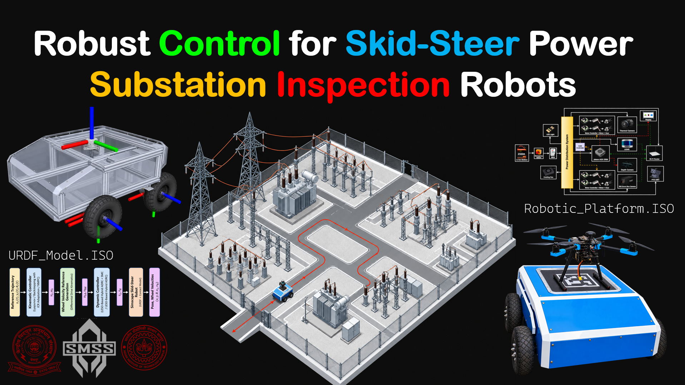

RESEARCH RECORD / R01 / IECON 2026
Robust Control for Skid-Steer Autonomous UGVs
Chhavi Singh, Prof. Bishakh Bhattacharya · IECON · 2026

RESEARCH SUMMARY
Abstract
This was my B.Tech thesis work at the SMSS lab, IIT Kanpur. Autonomous skid-steer unmanned ground vehicles (UGVs) excel in inspection, surveillance, and off-road operations but face significant trajectory-tracking challenges due to lateral skidding, wheel-ground interactions, nonholonomic constraints, model uncertainties, and external disturbances. To address these challenges, this paper compares three cascaded control architectures. The first combines a Lyapunov-based kinematic controller with a Linear Extended State Observer (LESO) based Hybrid active disturbance rejection control (ADRC) sliding mode dynamic controller(SMC). The second integrates a backstepping kinematic controller with instantaneous-center-of-rotation compensation into the same dynamic layer. The third employs nonlinear model predictive control (NMPC) at the kinematic level paired with LESO based ADRC. The proposed architectures are validated on a high-fidelity Simscape Multibody model incorporating realistic wheel-ground contact and friction. Comparative simulations over discontinuous trajectories demonstrate that, while all three architectures guarantee stable tracking, the NMPC-ADRC-LESO configuration achieves the best overall tracking performance.
RESULTS
SYPA Grant
Our work was awarded the SYPA grant, one of the 52 awardees amongst a total of 1,229 accepted papers.
PUBLICATION RECORD